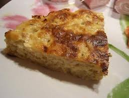

Quiche au thon
Ingrédients
×
- 3 oeufs
- sel
- poivre
- 30 cl de crème fraîche
- 1 grosse boîte de thon
- 100 g de fromage râpé
- muscade
- curry
- 1 pâte brisée
- moutarde

Préparation
Étape 1
Battre 3 oeufs avec du sel et du poivre. Incorporer 30 cl de crème fraîche, puis 1 grosse boîte de thon émietté, 100 g de fromage râpé, une pointe de muscade et éventuellement du curry.
Étape 2
Étaler 1 pâte brisée dans un moule, tartiner un fond de moutarde et piquer à la fourchette. Verser la préparation et cuire 45min à 190ºC (th. 6-7).
Résumé
3 oeufs
sel
poivre
30 cl de crème fraîche
1 grosse boîte de thon
100 g de fromage râpé
muscade
curry
Battre
1 pâte brisée
moutarde
tartiner cuire 190ºC